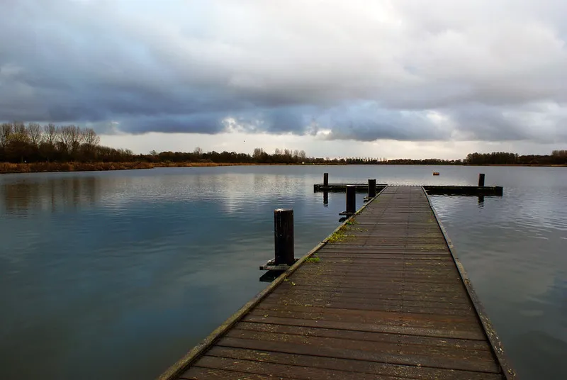
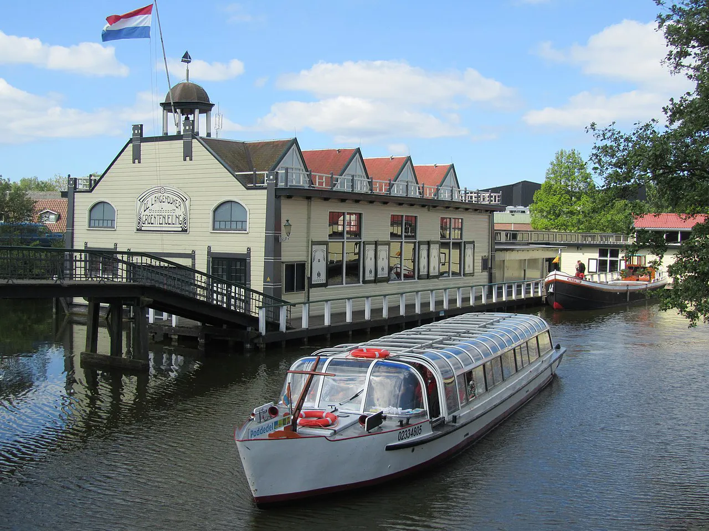

1. Geestmerambacht, Park van Luna / Strand van Luna
Voor de liefhebbers die toch een strandgevoel willen voelen of wat natuur willen bezoeken, bevindt zich in Stad van de zon in Heerhugowaard het Park van Luna en Strand van Luna.
Mocht dat niet genoeg zijn dan is er in de buurt van Noord-Scharwoude nog het recreatiegebied Geestmerambacht.

2. Museum Broekerveiling
Een leuk uitje voor het gezin of school in de buurt van Broek op Langedijk.
Het museum was van oorsprong een veiling waar voornamelijk groente producten aan de man werden gebracht.
Dit werd gedaan via een zogenaamde doorvaarveiling, waar men met een boot vol producten het veilinghuis binnen vaarde zodat er direct op kon worden geboden.
